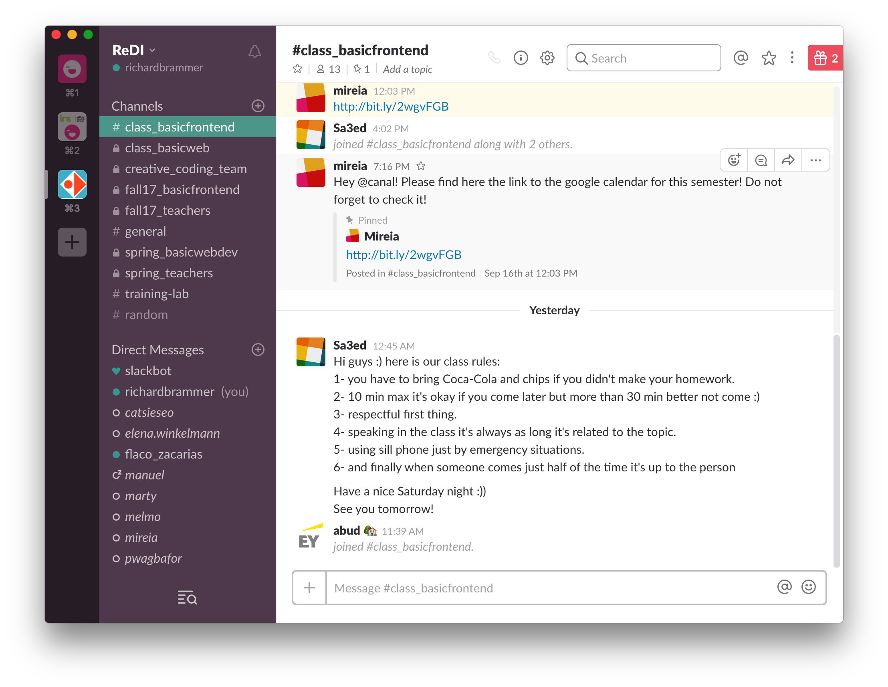
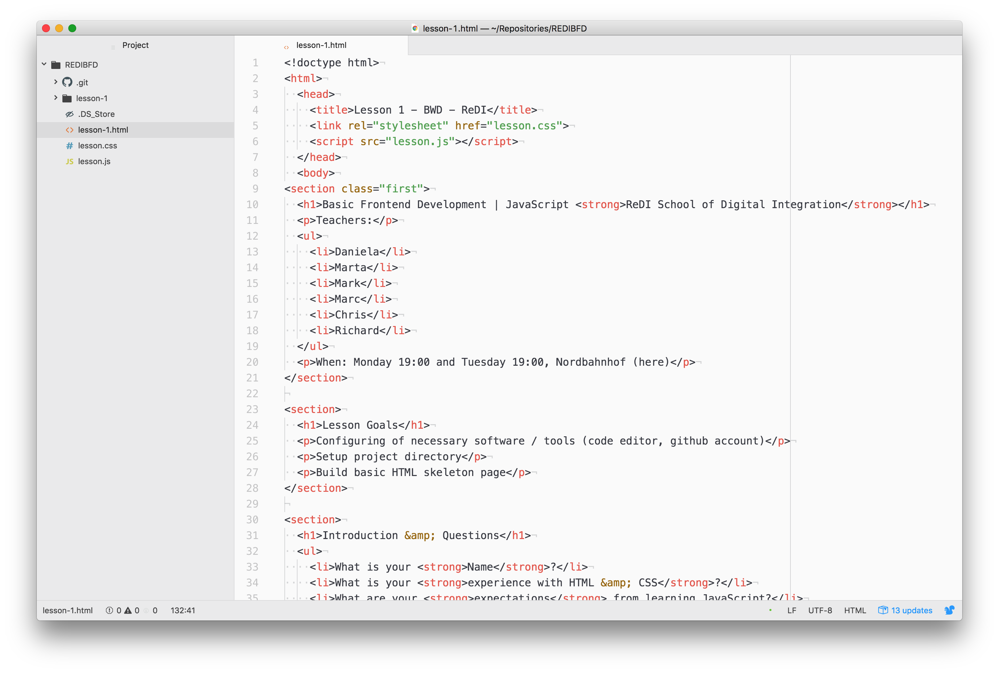
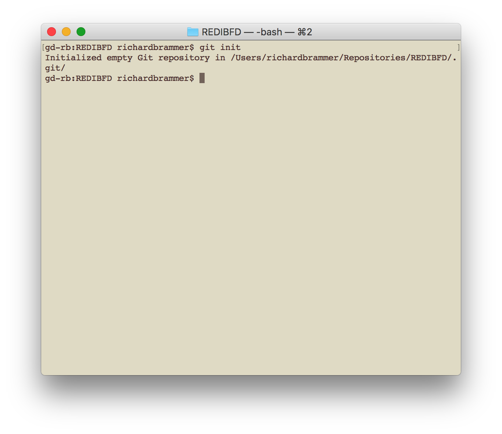
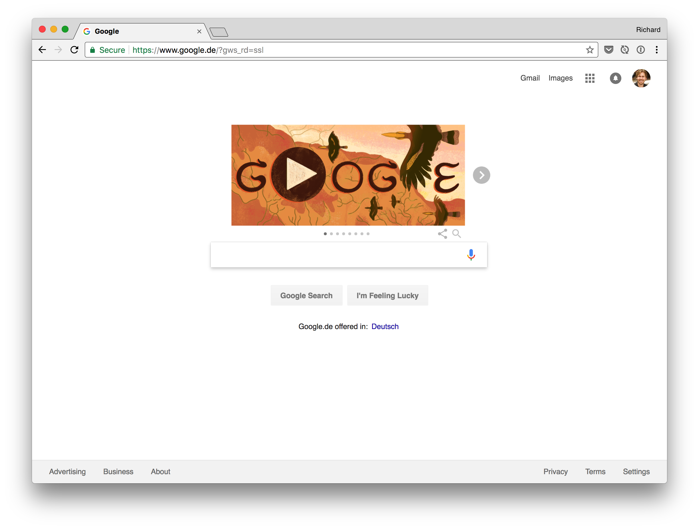
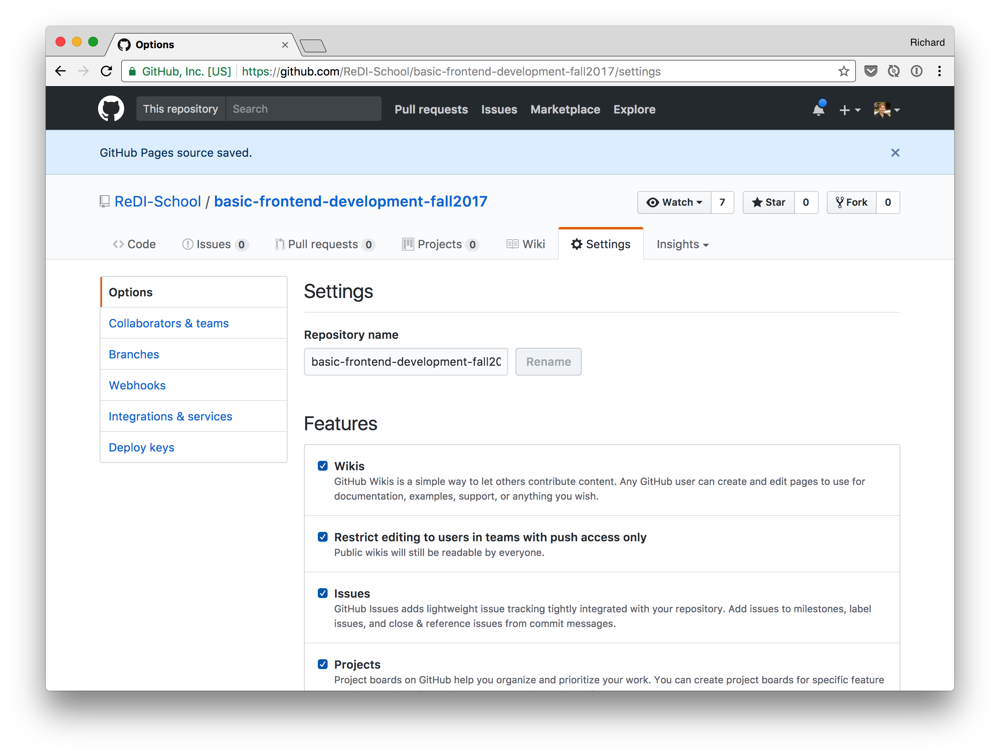

Teachers:
When: Monday 19:00 and Tuesday 19:00, Nordbahnhof (here)
Configuring of necessary software / tools (code editor, github account)
Setup project directory
Build basic HTML skeleton page
If you can't make it to a class, notify us in Slack.
How do you create a basic website in HTML?
How do you create a basic website in HTML?
HTML
Which HTML elements do you know?
How do you add a CSS stylesheet to your page?
What's the difference between the three selectors?
We communicate through Slack.
I will send out slides there and you can ask questions, or excuse yourself from a class.
Please join the Slack channel class_basicfrontend now.

Check, that Atom or any other text editor is installed.

Create a project directory for your first project
REDIBFD in your home directory. (Redi Basic Frontend Development)my-first-javascript within REDIBFD.Git helps you to secure your code against loss and unwanted changes.
You can go back to any saved state and you can easily collaborate with your team.
Check that Git is installed by:
cd ~/REDIBFD/my-first-javascriptgit init
Check, that Chrome is installed.
We will use Chrome as main browser, because the developer tools are very strong.

Please make sure, that you have a Github account, by logging in at
https://github.com

In your project directory create an index.html file:
... and a JavaScript file script.js:
What did you learn?
Write down two ideas for simple webservices, that we could develop in the course of this semester.
Remember: who doesn't complete the homework, needs to buy chips and cola!
Please read two ideas.
HTML is the structure and content of a website, CSS is the design of the website, JavaScript is the behaviour of the website
You can create a whole website or application in JavaScript. This is called a Single Page Application (SPA).
JavaScript is an implementation of the ECMAScript standard
The most broadly used version is ECMAScript 5 (ES5). But there is a new version every year.
The current version is ECMAScript 2017, it is the 8th version.
| ES5 | ES2017 |
|---|---|
var i = 1; |
let i = 1; |
ECMAScript is backwards compaitble. ES5 code works in ES2017!
Manipulate the DOM (Document Object Model).
That means it can manipulate the HTML of a page.
Add the following code to your script.js from yesterday:
What happens in the browser?
Manipulate styles and stylesheets.
Add the following code to your onload function:
Take user input and work with it.
Change your script.js to the following:
(1) Include an external file using a script element <script src="filename.js"></script>
(2) Write your code directly into a script element:
<script>window.alert('Not recommended, but can be useful.');</script>
(3) Use JavaScript directly within HTML elements:
<button onclick="window.alert('Never use it!');"></button>
We will always use the first method in this class.
If you want to see your changes in the browser, you have to save the files.
But what, if you want to test something, without losing a working state?
Git helps: You can commit stable states to your git, and you will always be able to return to this state.
Commit your work now in the Terminal:
cd ~/REDIBFD/my-first-javascriptgit add .git commit -m "First steps in JavaScript"
There are six primitive data types in JavaScript:
boolean, number, string, symbol, undefined and null.
Guess, which data type the following values have:
1
"Richard"
42
true
Symbol('a')
null
0
'number'
'13.3'
13.3
undefined
1 == 2
'1' === 1
A variable is defined using let and a descriptive name. The single equal sign (=) assigns a value to the variable.
let name = 'Darth Vader';
let age = 50;
let isJedi = false;
let isSith = true;
let friends = null;
let father;
Change your script.js to the following:
let a = 1 + 1;
let b = 0 - 1;
let c = 1 * 2;
let d = 15 / 2;
let e = '12' + '5';
let f = true;
b += 1;
c *= 2;
d /= 2.5;
let g = 5 % 3;
g %= 2;
let a == 1;
a =+ 1;
let b = '11'
var c = b;
Write a mini calculator that adds two given numbers.
Use window.prompt() to get the numbers and window.alert() to output the sum.
Ask questions about the homework in Slack
If you don't do the homework, bring cola and chips.